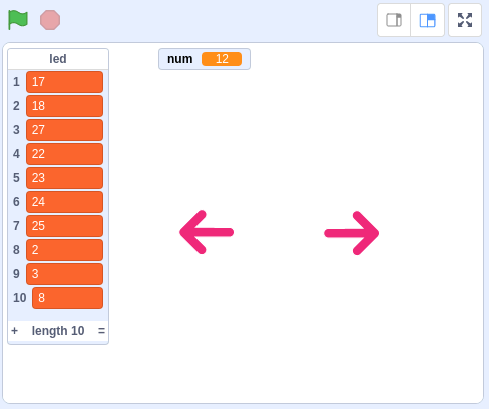
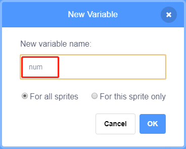
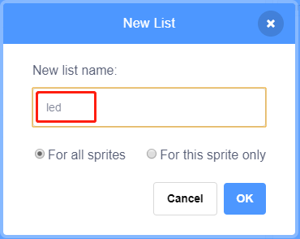
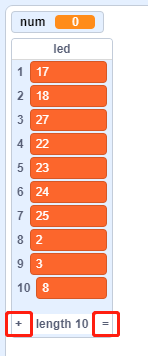
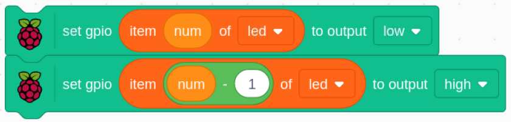

1.6 Water Lamp¶
Today, we will use LED Bar Graph, Raspberry Pi and scratch to make a Water Lamp.
The LED Bar Graph will light up in order with the direction of the arrows on the stage.
Required Components¶

Build the Circuit¶

Load the Code and See What Happens¶
Load the code file (1.6_water_lamp.sb3) from your computer to Scratch 3.
By clicking on Arrow1, the LEDs on the LED bar are lit in sequence from the left to the right (one at a time) and then off. Click Arrow2 and the LEDs light up in the opposite order.
Tips on Sprites¶
Delete the default sprite and choose the Arrow1 sprite.

Here we will need 2 Arrow1 sprites, which can be done with the duplicate button.

Click on the Arrow 2 sprite and change the direction of the arrow by selecting costume 2.

Now let’s make a variable.

Name it as num.
Follow the same method to create a list called led.
After adding, you should see the num variable and the led list on the stage area.
Click + to add 10 list items and enter the pin numbers in order (17,18,27,22,23,24,25,2,3,8).
Tips on Codes¶

This is an event block that is triggered when the current sprite is clicked.

The initial value of the num variable determines which LED is lit first.
Set the pin corresponding to num in the led list to low to light the LED, and then set the pin corresponding to num-1 to high to turn off the previous LED.